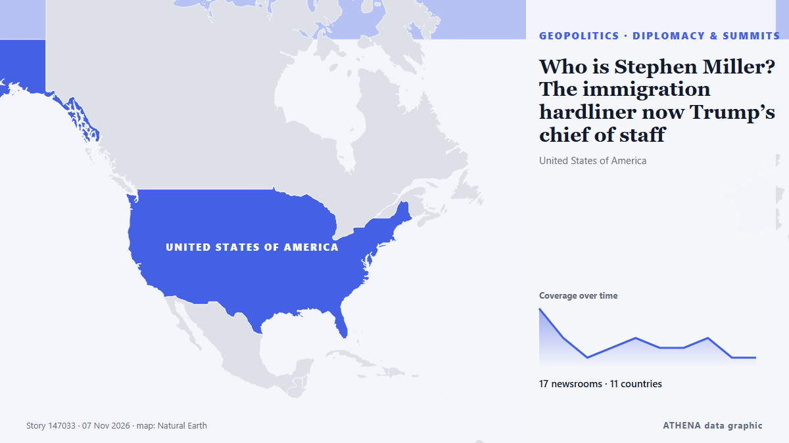

Diplomatie et sommets
SponsoriséPrésenté par  Cybernetics and Artificial Intelligence Lab Welcome to the Cybernetics and Artificial Intelligence Laboratory, established at the Department of Business Administration of the National and Kapodistrian University of Athens. The lab is headed by Professor Dimitrios Thomakos. The lab aims to do research that can be published in top venues. Our research uses tools and methods of Artificial Intelligence, and lies in the following areas: - Forecasting - Decision making - Cyber security - Finance We are always looking forward to collaborating with exceptional students!
Cybernetics and Artificial Intelligence Lab Welcome to the Cybernetics and Artificial Intelligence Laboratory, established at the Department of Business Administration of the National and Kapodistrian University of Athens. The lab is headed by Professor Dimitrios Thomakos. The lab aims to do research that can be published in top venues. Our research uses tools and methods of Artificial Intelligence, and lies in the following areas: - Forecasting - Decision making - Cyber security - Finance We are always looking forward to collaborating with exceptional students!
| 25 oct. | 0 |
|---|---|
| 26 oct. | 0 |
| 27 oct. | 0 |
| 28 oct. | 1 |
| 29 oct. | 0 |
| 30 oct. | 0 |
| 31 oct. | 0 |
| 1 nov. | 1 |
| 2 nov. | 3 |
| 3 nov. | 4 |
| 4 nov. | 1 |
| 5 nov. | 11 |
| 6 nov. | 1 |
| 7 nov. | 1 |
Les titres sont affichés en anglais, tels que publiés.

Who is Stephen Miller? The immigration hardliner now Trump’s chief of staff
The architect of the Trump administration’s brutal crackdowns on immigration and dissent was already known as “the prime minister.” Now he’ll work as the chief of staff. de Wired
Rubio denies plans to leave post for White House bid
WASHINGTON: US Secretary of State Marco Rubio dismissed reports Thursday that he was planning to leave the Trump administration as he weighs his next moves after Republicans’ losses in midterm… de Arab News
Melania Trump urges ‘humanity over war’ with Ukraine, Russia officials
Melania Trump facilitated a meeting between Ukrainian and Russian officials at the White House, calling for a focus on ‘humanity over war.’ This comes as talks are scheduled for the next week in Abu… de Arab News
Trump signs order to preserve Oval Office as national monument
The order comes after Trump made a series of big changes to the decor of the Oval Office and tore down the White House East Wing. de BBC News
Kremlin confirms trilateral talks on Ukraine set for Nov 10-11 in Abu Dhabi
The United States will bring together delegations from Ukraine and Russia in Abu Dhabi on November 10-11 to discuss ending Russia's conflict with Ukraine, post-conflict security agreements and… de CGTN (World)
Iran’s security chief discusses regional security with Putin
MOSCOW: Russian President Vladimir Putin met Iranian top security official Mohsen Rezaei at the Kremlin, Iran’s state media reported on Thursday, after Iranian negotiators met with mediators to… de Arab News
AP Exclusive: Trump administration held talks with Iran on deporting Iranians during the war
Court documents reveal President Donald Trump's administration held secret talks with Iran about deporting Iranians during the ongoing war. de The Independent
Italy’s Meloni blasts Europe’s ‘disarray’ on Ukraine talks
Italian Prime Minister Giorgia Meloni criticizes the European Union’s handling of Ukraine negotiations, labeling it ‘disorderly’ and urging a unified voice. de Arab News
Trump says he met Putin envoy, sees Ukraine deal soon
The US President predicted there would be a “big agreement” involving more than just Ukraine. de The Straits Times
Putin will not attend Britain's G20 summit, UK PM Burnham saysre
LONDON: Prime Minister Andy Burnham has said Russian President Vladimir Putin will not travel to a G20 summit in Britain because of UK sanctions against him, The Economist newspaper reported on… de Business Recorder
Melania Trump meets with Russian and Ukrainian representatives at the White House
WASHINGTON: First Lady Melania Trump will host “representatives” of Russia and Ukraine in Washington, the White House said Tuesday, without specifying a date or offering further details about who may… de Business Recorder
Türkiye to continue efforts to bring an end to Russia-Ukraine war: President Erdogan
Turkish president says Ankara will maintain 'close dialogue' with US administration and Congress following midterm election results. de Anadolu Agency (English)
Trump says US will end military aid to Israel by end of the year
Says democrats, left-wing politicians using US financial support to Israel as a talking point to criticise Republicans. de Express Tribune
Morocco will ‘uphold Western Sahara ceasefire after UN mission ends’
Morocco will stay committed to the ceasefire in the occupied Western Sahara despite the end of the United Nations peacekeeping mission in the territory, the Royal Palace said on Wednesday. de Cyprus Mail
Spain: Madrid hosts 30th Ibero-American Summit with 22-nation bloc
Spain is hosting the 30th Ibero-American Summit in Madrid, bringing together leaders from Spanish- and Portuguese-speaking nations. de Euronews English
European Commission hosts talks on Ukraine's post-war reconstruction
Delegations from Ukraine, Germany, France, UK, US, NATO, World Bank meet in Brussels. de Anadolu Agency (English)
Merz announces November 19 meeting of Coalition of the Willing in Berlin
German Chancellor Friedrich Merz has announced that an in-person meeting of the leaders of the countries participating in the Coalition of the Willing will take place in Berlin on November 19. de Ukrinform (English)
Democrats capture Congress in sweeping setback for Trump
Democrats captured majorities in both the Senate and House on Tuesday, scoring sweeping victories that reached deep into Republican strongholds as tens of millions of voters delivered a scathing… de The Korea Times